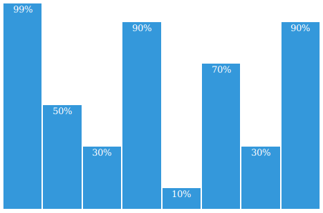
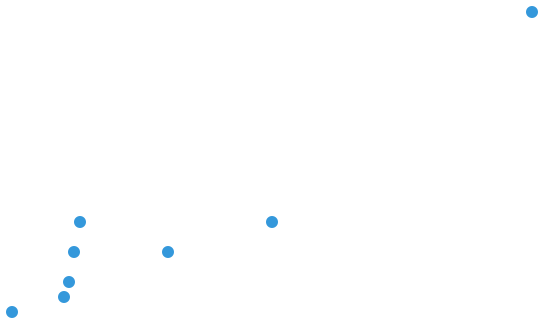

cssplot
Simple, css-only plotting.
Features
- No javascript required
- Easy-to-use
- Responsive
Examples
bar chart
<div class="bar-chart">
<ul class="container">
<li data-cp-size="99">99%</li>
<li data-cp-size="50">50%</li>
<li data-cp-size="30">30%</li>
<li data-cp-size="90">90%</li>
<li data-cp-size="10">10%</li>
<li data-cp-size="70">70%</li>
<li data-cp-size="30">30%</li>
<li data-cp-size="90">90%</li>
</ul>
</div>

vertical chart
<div class="vertical-chart">
<ul class="container">
<li data-cp-size="100">100%</li>
<li data-cp-size="30">30%</li>
<li data-cp-size="20">20%</li>
<li data-cp-size="70">70%</li>
<li data-cp-size="90">90%</li>
</ul>
</div>

scatterplot
<div class="scatterplot">
<ul class="container">
<li data-cp-x="50" data-cp-y="30">a</li>
<li data-cp-x="30" data-cp-y="20">b</li>
<li data-cp-x="10" data-cp-y="5">c</li>
<li data-cp-x="11" data-cp-y="10">d</li>
<li data-cp-x="12" data-cp-y="20">e</li>
<li data-cp-x="13" data-cp-y="30">f</li>
<li data-cp-x="0" data-cp-y="0">h</li>
<li data-cp-x="100" data-cp-y="100">i</li>
</ul>
</div>

Alternatively cssplot.base.css can be used alone with the following modifications:
- Bar chart: use
class="chart-column" style="height: 99.0%" instead of data-cp-size="99"
- Vertical bar chart: use
class="chart-row" style="width: 99.0%" instead of data-cp-size="99"
- Scatter plot: use
class="chart-dot" style="left: 20.0%; bottom: 10.0%" instead of data-cp-x="20" data-cp-y="10"